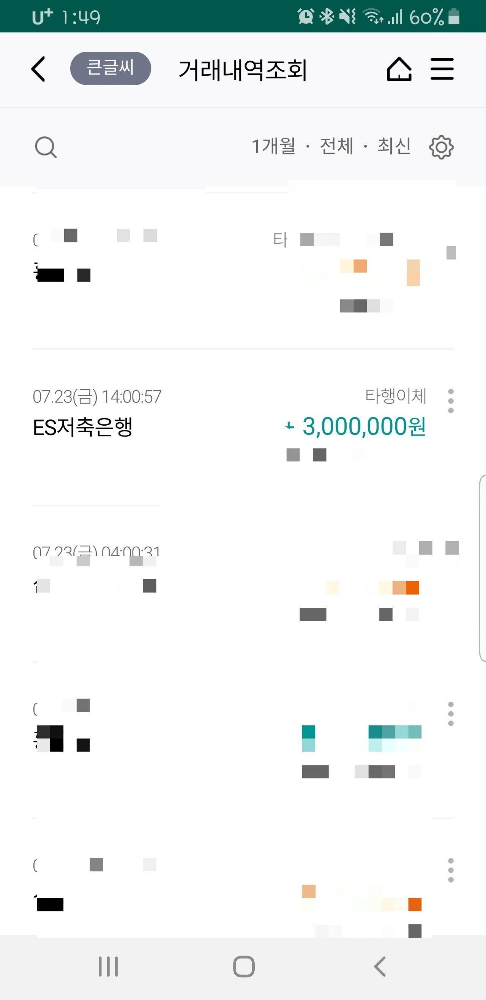

[주부대출] [사업자 주부대출] 김한수 상담사 대출후기.
안녕하세요. 햇살 여우 입니다.
우선 김한수 상담사 님께 감사 인사 다시한번 전해드립니다. 기 대출이 많아서 이전에 여러군데 상담했던 분들과 정말 달랐습니다. 포기 상태로 뱅크론을 알게 되고 용기내어 상담신청을 하였습니다.
사업자가 20년10월 부터였고 기대출이 2천만원에 현금서비스도 300정도 있었습니다. 상담사님께서 처음에는 사업자 대출로 통합대출 알아봐 주셨는데 소액건으로 건수가 많아서 대출이 불가하다고 하시면서, ES저축은행에 주부 대출 상품이 있다고 설명해 주셨습니다.
사실 이 전에 다른 곳에서 상담한 상담사 분들은 안된다고 하고 끝이었는데 김한수 상담사님은 통합은 어려워도 추가 대출을 알아봐 주셔서 희망을 가졌습니다. 상담사님께서 자세히 설명해 주신대로 서류를 접수하고 기다린후 은행 직원과 통화를 하고 통화를 마치고 바로 승인 전화를 받고 급한 자금을 해결 하였습니다.
저도 사실 후기보면서 이렇게 건수가 많은데 어디가 되겠어? 포기 상태로 상담 했는데 다양한 상품을 알고 계신 덕분에 위기를 잘 넘겼습니다. 정말 감사합니다.
